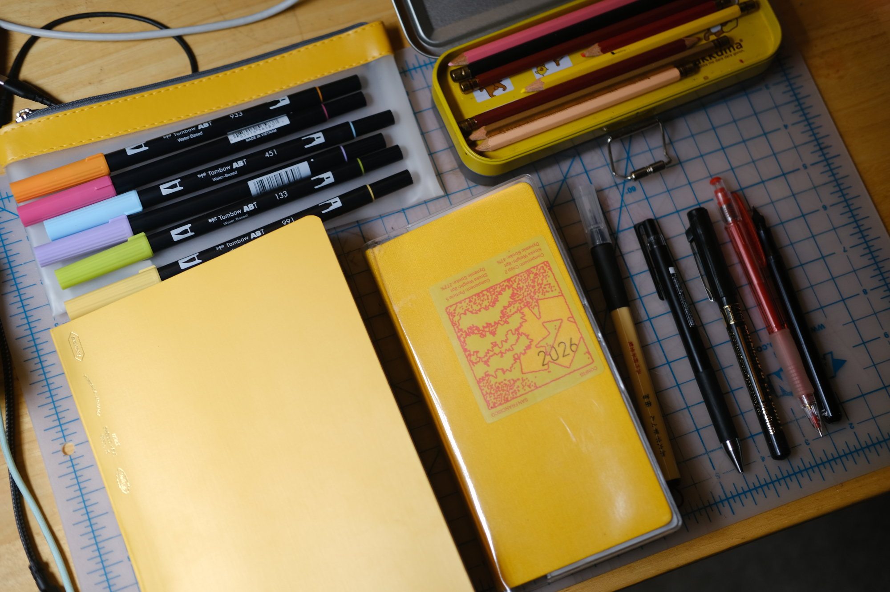
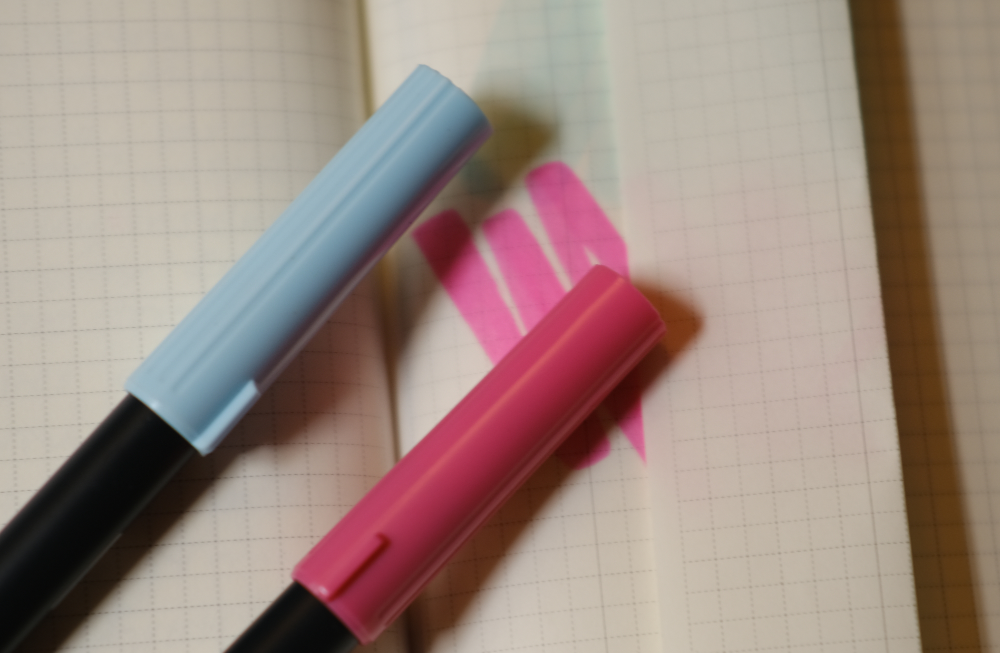
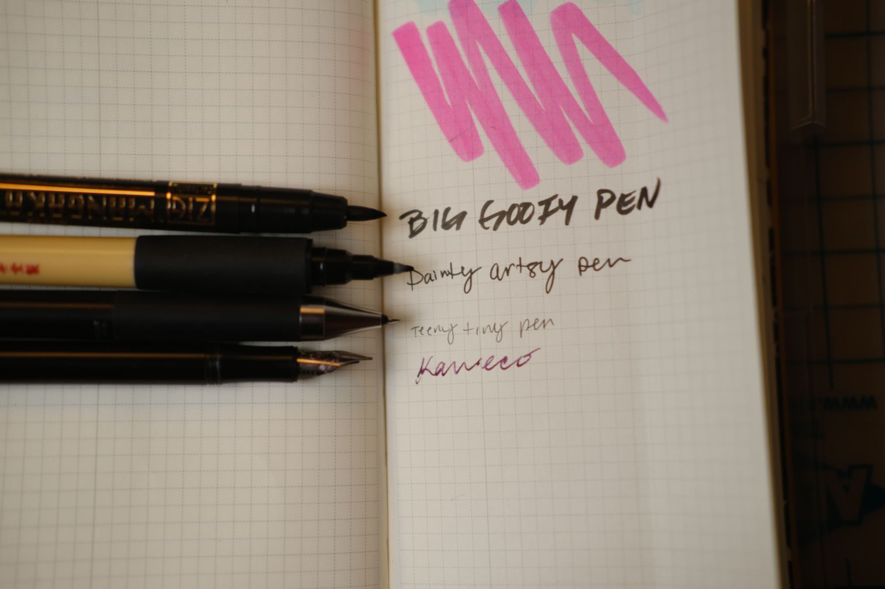

There is something in the atmosphere right now. Between Sophie Alpert's viral memo There are no lossless transformations of natural language test, the general panic over losing our critical thinking skills, the return to analog writing is trending.
I started making elaborate sketch notes during high school and I didn't stop in adulthood. I'm not a snob, I don't think you need expensive journals and imported pens to have a good writing practice. Where some people indulge in nice shoes and accessories, I buy fancy paper.
My journals
I use a Stalogy journal for language practice and a Hobonichi Weeks as my planner and travel journal. I like having a dedicated place for each: one for studying and one for keeping track of everyday life and the places I go.

Pens in three sizes
When I'm running low on pens, I treat myself to a JetPens sampler set. I try to always have a BIG, MEDIUM, and TINY pen available so I can switch between them depending on what I'm writing or drawing.

Tombow markers
My journals are onion skin thin Tombow markers are my holy grail marker that doesn't bleed through and leave unwanted marks.
